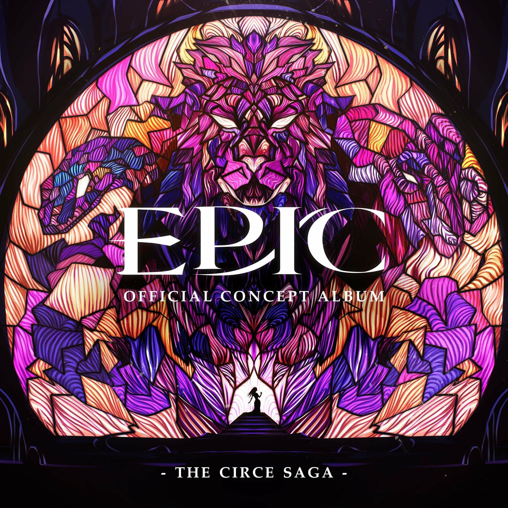

| Kirke Saga | |
|---|---|
|  | |
| Information | |
| Saga Nr. | 4 |
| Akt | Akt 1 |
| Songs: | Puppenspieler |
| Würd'st du nicht gern | |
| Erledigt | |
| Man kann doch auch anders | |
| Chronologie | |
| Vorherige | Ozean Saga |
| Nächste: | Unterwelt Saga |
Kirke Saga
Die Kirke Saga ist die vierte Saga im Musical. Sie besteht aus 4 Songs und dient als Fortsetzung der Zyklopen Saga.
Songs
Handlung
Odysseus und seine Crew landen auf einer Insel, nachdem sie Poseidons
Zorn nur knapp entkommen sind. Während sie an Land gehen, versucht Eurylochos, Odysseus etwas zu sagen, doch
dieser weist ihn ab und schickt ihn stattdessen mit einem Erkundungstrupp los, um die Sicherheit der Insel zu
überprüfen. Nur Eurylochos kehrt zurück, was Odysseus sofort beunruhigt. Eurylochos berichtet ihm, dass sie
einer Frau namens Kirke begegnet seien, die sie in ihren Palast gelockt habe. Dort habe sie den Rest der Crew
mit einem Zauber, den sie in ihr Essen gemischt habe, in Schweine verwandelt.
Trotz Eurylochos' Warnungen beschließt Odysseus, zurückzugehen, um seine Männer zu retten. Während er durch
den Wald geht, bietet ihm eine mysteriöse Stimme göttliche Hilfe an. Die Stimme gehört Hermes, der sich als
Odysseus’ Urgroßvater zu erkennen gibt. Hermes gibt ihm eine magische Blume namens Moly (die er scherzhaft
„Holy Moly“ nennt) und erklärt, dass sie ihm die Fähigkeit verleiht, eine Kreatur seiner Wahl zu beschwören.
Nachdem Hermes sich verabschiedet hat, macht sich Odysseus auf den Weg, um die Zauberin zu konfrontieren.
Im Palast trifft Odysseus auf Kirke und fragt sie, ob sie seiner Crew Schaden zugefügt habe. Sie antwortet,
dass sie nichts weiter getan habe, als ihre wahre Natur offenzulegen – doch Odysseus weiß bereits, dass sie sie
in Schweine verwandelt hat. Amüsiert erklärt Kirke, dass auch sie für jemanden kämpfe: ihre treuen Nymphen.
Dann versucht sie, Odysseus einzuschüchtern, indem sie eine Chimäre beschwört. Doch Odysseus enthüllt, dass sie
ihm nichts anhaben kann, da er das Moly gegessen hat. Daraufhin ruft er einen Zyklopen herbei, und die beiden
Monster kämpfen im Namen ihrer Beschwörer. Kirke verliert den Kampf und zieht schließlich ihre letzte Karte –
sich selbst.
Sie versucht, Odysseus zu verführen, um ihn in einen unvorsichtigen Moment zu locken und ihn zu töten. Doch
zu ihrer Überraschung widersteht Odysseus ihr. Er spricht von seiner Liebe zu seiner Frau Penelope und erklärt,
dass sie der Grund sei, warum er unbedingt nach Hause zurückkehren müsse. Gerührt von seiner Treue offenbart
Kirke ihm den Namen eines verstorbenen Sehers, Tiresias, der ihm vielleicht helfen könne. In der Hoffnung,
dass eine kleine Geste der Freundlichkeit andere zu mehr Mitgefühl bewegen könnte, hebt sie den Zauber von
Odysseus’ Crew auf und hilft ihnen, in die Unterwelt zu gelangen.
Trivia
- Das Veröffentlichungsdatum des englischen Albums fiel auf den Valentinstag, was andeuten könnte, dass Talya Sindel, englische Stimme von Kirke, Jorges Freundin ist.
- In einem Video, das Jorge veröffentlichte, erzählte er, dass ein Teil des Park Güell in Barcelona in Spanien ihn an die Kirke Saga erinnert. Genauer gesagt der Sala Hippostila.